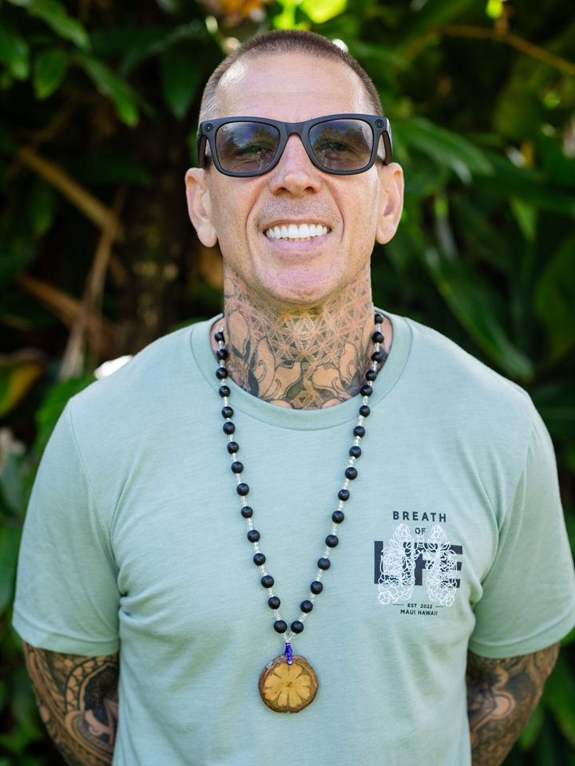

Nick Terry TNT
Breathwork + recovery
Nick Terry TNT is a breathwork and retreat facilitator with over a decade of experience in wellness and recovery. He specializes in conscious connected breathwork to support emotional release, nervous-system regulation, and reconnection to self-trust and purpose.
He co-founded Breath of Life Wellness, co-owns Honu House Hawaii, and is the best-selling author of Breath of Life: Finding Long-Term Recovery with Breathwork and Stepwork. Nick's facilitation blends breathwork, cold immersion, mindfulness, and community to create trauma-informed, heart-centered spaces where people can release, reconnect, and remember who they are.
